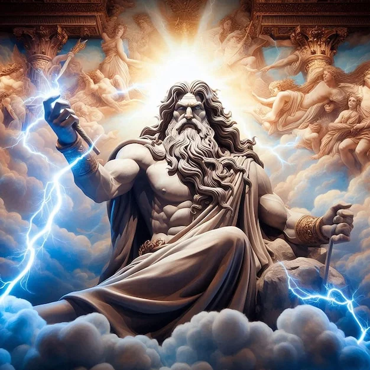

Guia do sistema
Componentes, efeitos e regras para construir os ecrãs do Zeus com a mesma luz.
Fundamentos
Preto absoluto, texto quase branco, um ciano frio para a interface e o ouro só para a luz quente dos raios.
Cores
Tipografia SF Pro
.z-display.z-t1.z-t2.z-t3body.z-callout.z-footRaios de canto
Curvas: --spring para elevar e carregar, --out para entradas e fades.
Controlos
A interface fica calma: pílulas, vidro, um só botão branco por zona.
Botões
.z-btn--primary | --secondary | --ghost | --danger | --sm, .z-icon-btn, aria-busy
Campos
A chave tem 32 letras e números (0 a 9, a a f).
.z-field > .z-label + .z-input(--mono) + .z-help(.is-error|.is-ok), .z-search
Escolhas e dados
.z-chip[aria-pressed] + .z-chip__n, .z-tag(--mono|--strong|--cache|--gold)
Interruptor, segmentos e separadores
.z-switch[role=switch], .z-seg (rádios ou links), .z-tabs
Insígnias e estado
.z-badge--live | --cache | --last, .z-status[data-state], .z-progress (--p)
Esqueletos e avisos
.z-sk(--title|--line), toast('…') em fx.js
Filas e folha de detalhe
Passa o rato meio segundo sobre um cartão para o expandir. Setas e teclado paginam. Clicar abre a folha com as Fontes.
.z-row > .z-row__title + .z-track > .z-card(--poster|--wide) > .z-card__art; rows(root); modal(el).open(origem)
Arte que se dissolve em preto
Uma figura por ecrã, sempre a fundir-se no preto pelo lado do texto. A dessaturação e o grão contam estados do sistema.

A sessão expirou
Por segurança, a sessão termina ao fim de 30 dias sem atividade. Entra outra vez para continuares onde ficaste.
Entrar outra vez.z-art(--left|--right|--billboard|--center|.is-muted|.is-dim) > img, --pos, .z-vignette, .z-grain, .z-mask-x|y|radial|b, grain(el)
Luz do cursor sobre o mármore
O busto fica na penumbra e só a zona sob o cursor acende. Sem rato, a luz orbita devagar. O painel de vidro é o mesmo da entrada.

cursorLight(elComImg, { rest, orbit, tint }) ; .z-glass .z-panel
Subida pelas nuvens
Camadas de nuvens em paralaxe. O progresso de um fluxo sobe a câmara até ao cume.

const c = clouds(canvas); c.set(passo / total)
Raios
Raios procedimentais com ramificações. Frio para a TV, quente para o Cinema, neutro no resto. Nunca mais de três clarões por segundo.
lightning(canvas, { palette, ambient, onStrike: p => painting.flash(p, p.color) }).strike(alvo)
Regras
- Uma figura por ecrã.Uma estátua, um enquadramento, nunca uma galeria de deuses.
- A imagem acaba sempre em preto.Nada de arestas: máscara ou gradiente até #000 do lado do texto.
- O drama vem da luz.Raios, clarões e a luz do cursor; a interface por cima fica calma e legível.
- Fotossensibilidade.No máximo três clarões por segundo e nenhum com movimento reduzido.
- Movimento reduzido.Sem ciclos, inclinações nem Ken Burns; imagens estáticas e fades curtos.